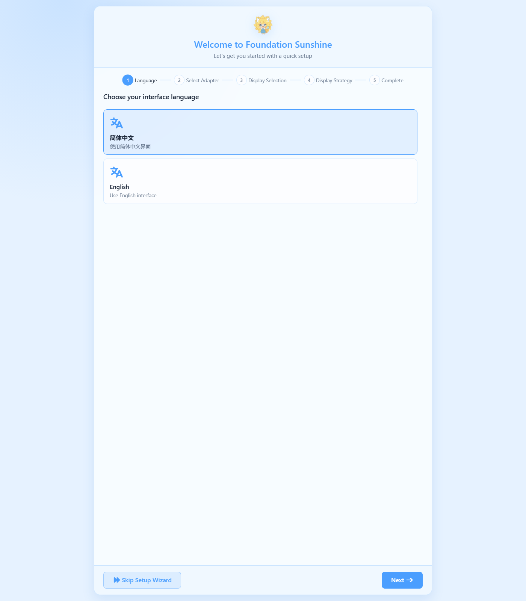
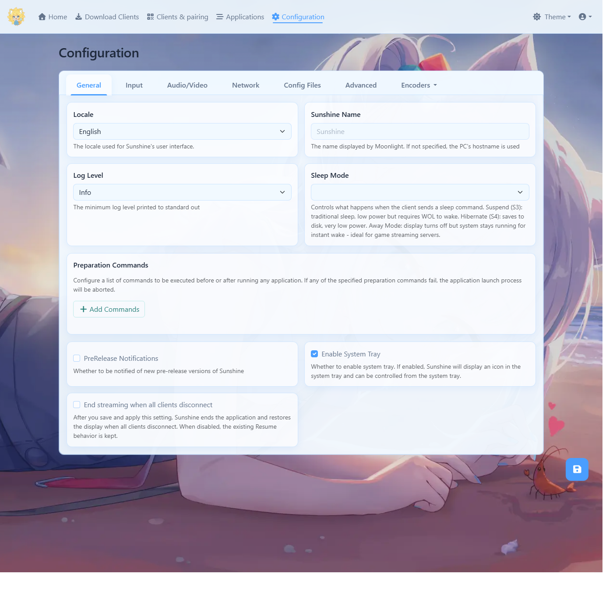
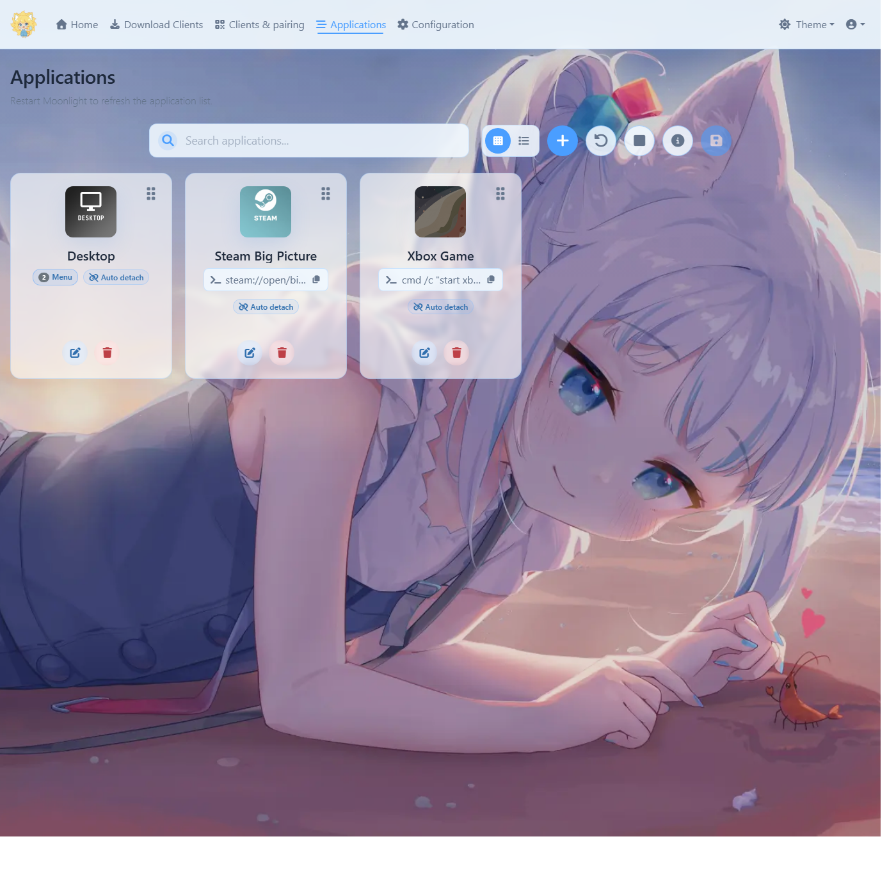
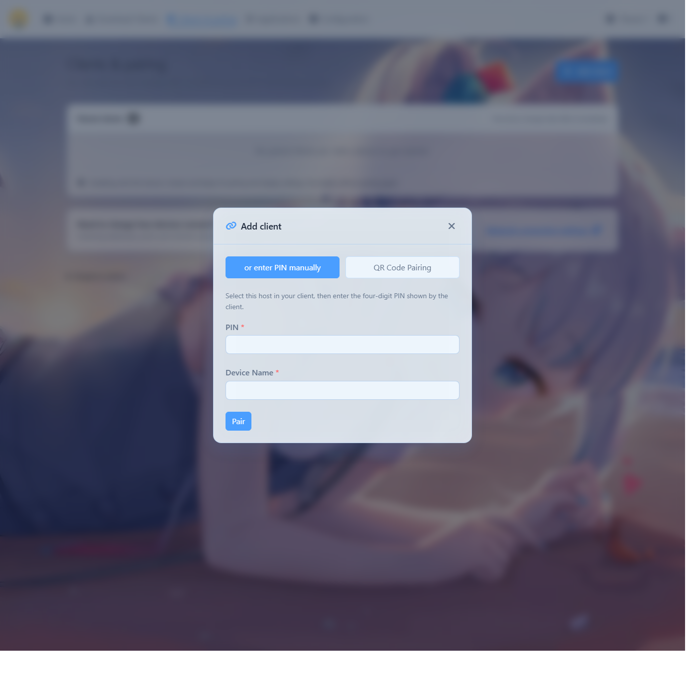

适用版本：v2026.1031.121458（2026-10-31 发布，AlkaidLab/foundation-sunshine）
适用系统：Windows 10 22H2（19045）及以上
本机部署形态：便携版，装在 F:\foundation-sunshine\，C 盘零写入
编写日期：2026-11-02
Foundation Sunshine 是 Sunshine 的 Windows 优化分支，作用是把这台电脑变成一台"串流主机"：掌机、手机、平板上的 Moonlight 客户端连上来，就能看电脑桌面、玩电脑上的游戏。它是发送端（主机），Moonlight 是接收端（客户端）。
| 项目 | 实测结果 |
|---|---|
| 程序位置 | F:\foundation-sunshine\Sunshine\sunshine.exe |
| 配置位置 | F:\foundation-sunshine\Sunshine\config\ |
| 占用空间 | 整个 F:\foundation-sunshine\ 共 144MB |
| 运行方式 | 普通用户进程（不是 Windows 服务） |
| 管理界面 | https://127.0.0.1:47990/ |
| 监听端口 | TCP 47984 / 47989 / 47990 / 48010 / 48020 |
| 显卡编码 | RTX 5060 Ti 上 H.264 / HEVC / AV1 三套 NvEnc 全部可用，10bit 可用 |
| 采集 | 桌面 1920x1080 @ 60Hz，SDR |
| 手柄驱动 ViGEmBus | 已装，服务 Running |
| 虚拟显示器 ZakoVDD | 已装 v15.0.15.10，设备 ROOT\DISPLAY\0001 状态 OK |
| 防火墙 | 2 条入站放行规则（TCP+UDP），绑定 sunshine.exe，Profile=Any |
| 开机自启 | 未装（部署时明确选择跳过） |
| 本机局域网地址 | WLAN 192.168.2.14 ／ 有线 192.168.1.99（两块网卡都是 Public 档） |
到 https://github.com/AlkaidLab/foundation-sunshine/releases/latest 看最新版，Windows 用户面前有两个包：
| 文件 | 大小 | 给谁用 |
|---|---|---|
Sunshine.vXXXX.WindowsInstaller.exe | 约 36MB | 官方推荐大多数用户：装成 Windows 服务，开机自启，锁屏也能连 |
Sunshine.vXXXX.Portable-x64.zip | 约 41MB | 便携部署：程序待在自己指定的盘，不占 C 盘 |
Sunshine.Ds5Sidecar.x64.zip | 约 89MB | 额外组件，只在需要 DualSense 原生特性时下载 |
SHA256SUMS.txt | 1KB | 校验用，务必一起下 |
注意：便携包里的
install_portable.bat一样会装虚拟显示器驱动、虚拟麦克风、改防火墙、要管理员权限。"便携"只意味着不装服务、程序本体不在 C 盘，不意味着"不碰系统"。
PowerShell 里跑：
Get-FileHash -Algorithm SHA256 .\Sunshine.v2026.1031.Portable-x64.zip
把输出的哈希和 SHA256SUMS.txt 里对应那一行逐字比对，完全一致才算下载干净。
nvidia-smi 第一行。（本机 617.42，安全。）Portable-x64.zip 到一个纯英文路径，例如 F:\foundation-sunshine。解压后里面还有一层 Sunshine\，最终结构是 F:\foundation-sunshine\Sunshine\sunshine.exe。
F:\foundation-sunshine\Sunshine\sunshine.exe --creds 用户名 你的密码
看到 New credentials have been created 即成功。密码以加盐哈希存在 config\sunshine_state.json，明文不落盘。
sunshine.exe，或跑本说明书第 3 节的启动脚本。全部在 F:\foundation-sunshine\Sunshine\scripts\ 下，右键以管理员身份运行即可。这些脚本都是离线自带安装包，不联网。
| 想要的能力 | 装 | 卸 |
|---|---|---|
| 防火墙放行（远程设备连进来的前提） | add-firewall-rule.bat | delete-firewall-rule.bat |
| 手柄映射（虚拟 Xbox 手柄，ViGEmBus） | install-gamepad.bat | uninstall-gamepad.bat |
| 虚拟显示器（独立分辨率串流） | install-vdd.bat | uninstall-vdd.bat |
| 虚拟麦克风（把麦克风声音一起传过去） | install-vsink.bat | uninstall-vsink.bat |
| 虚拟鼠标（相对鼠标模式，部分老游戏需要） | vmouse\install-vmouse.bat | vmouse\uninstall-vmouse.bat |
| Windows 服务（开机自启 + 锁屏可连） | install-service.bat | uninstall-service.bat |
| 服务设为自动启动 | autostart-service.bat | — |
install-gamepad.bat 支持两个参数：force 强制重装；--verify-only 只校验安装包哈希不安装。它内置 SHA256 校验，包被篡改会直接拒绝安装。
把要跑的脚本串进一个 bat，用管理员权限跑一次，输出重定向到日志留档。本机这次用的就是这个办法，脚本和日志在：
F:\foundation-sunshine\deploy_components.batF:\foundation-sunshine\deploy_components.log照着改一份即可，里面每一步都会写 XXX_EXIT=错误码。
直接跑 Sunshine.vXXXX.WindowsInstaller.exe 覆盖安装即可，它会接管同一份配置。服务模式的配置目录在 %LOCALAPPDATA%\LizardByte\Sunshine，和便携版的 config\ 不是同一个位置——迁移前先用 scripts\migrate-config.bat 把配置搬过去，别裸装。
| 入口 | 说明 |
|---|---|
F:\foundation-sunshine\启动Sunshine.bat | 后台无窗口启动 + 4 秒后自动打开管理网页；已在运行则只开网页 |
F:\foundation-sunshine\停止Sunshine.bat | 连同托盘程序一起结束 |
| 系统托盘图标 | sunshine.exe 启动时会带起 assets\gui\sunshine-gui.exe，托盘可控制 |
sunshine.exe --help 实测）
sunshine.exe [选项] [配置文件路径] [--cmd]
--creds 用户名 密码 设置/修改管理界面账号
--help 打印帮助
--version 打印版本
-0 从标准输入读 PIN
-1 当作首次运行，不读也不写已保存状态（配对不受影响）
-2 强制替换视频流头部
-p 启用/关闭 UPnP
任意配置项可用 名字=值 临时覆盖
浏览器打开 https://127.0.0.1:47990/。
--creds 设的账号密码是给从局域网访问时用的——实测从局域网地址访问一律 401，也就是说远程设备不能免密控制这台机器。首次打开会看到 Welcome to Foundation Sunshine 设置向导，按顺序填：
左下角 Skip Setup Wizard 可以整段跳过，用默认值直接进主界面。

顶部导航五条：Home / Download Clients（各平台 Moonlight 客户端下载指引）/ Clients & pairing（配对与已配对设备）/ Applications（要串流启动的游戏和应用）/ Configuration（全部参数）。右上角是 Theme 主题切换和账号菜单。
Configuration 页内有 7 个分页：General / Input / Audio/Video / Network / Config Files / Advanced / Encoders。
General 页能改的：界面语言 Locale、主机显示名 Sunshine Name（Moonlight 里看到的就是这个名字）、日志级别 Log Level、睡眠模式 Sleep Mode、全局准备命令 Preparation Commands、预发布版本提醒、托盘开关 Enable System Tray、"所有客户端断开即结束串流"开关。改完点右下角软盘图标保存。

Applications 页是串流启动项的管理处：顶部一排按钮依次是搜索框、网格/列表视图切换、+ 新增、↺ 重载、■ 停止正在跑的应用、ⓘ 详情、💾 保存；每张应用卡片右上角是拖拽排序柄，下方是编辑（笔）和删除（垃圾桶）。默认自带 Desktop（带 Menu 子菜单和 Auto detach），Menu 里的触屏键盘实际调的是 tools\qiin-tabtip.exe。

启动Sunshine.bat），确认两块网卡里掌机要落在哪个网段。Download Clients 页有各平台入口。192.168.2.14192.168.1.99Clients & pairing 页点 Add client，填 PIN 和设备名 → Pair。也支持 QR Code Pairing 扫码配对。Desktop 等应用，选一个即可开始串流。
Clients & pairing 页里删掉对应客户端即可；换电脑重装时把整个 config\ 目录拷走，配对关系一起带走。
串流建立前只会监听 TCP：47984（画面服务）/ 47989（HTTP）/ 47990（HTTPS 界面）/ 48010（会话）/ 48020（本机 WebSocket）。视频、控制、音频用的 UDP 端口在客户端连上之后才打开——本次实测启动状态下确实查不到 UDP 监听，这是正常现象。因为防火墙规则是按程序放行 TCP+UDP，所以这些动态端口不用单独开。
| 我要做什么 | 怎么做 |
|---|---|
| 开机后启动串流 | 双击 F:\foundation-sunshine\启动Sunshine.bat |
| 停止串流 | 双击 停止Sunshine.bat，或托盘图标退出 |
| 改管理界面密码 | sunshine.exe --creds 用户名 新密码，然后重启 Sunshine |
| 看运行日志 | F:\foundation-sunshine\Sunshine\config\sunshine.log；历史归档在 config\logs_archive\ |
| 改分辨率 / 码率 / 帧率 / 编码器 | 界面 Configuration → Audio/Video 与 Encoders |
| 加一个游戏到串流列表 | 界面 Applications 页点 + |
| 删掉某个已配对设备 | 界面 Clients & pairing |
| 让主机名显示成中文/自定义 | Configuration → General → Sunshine Name |
| 补装开机自启 | 便携版：Configuration → General → Enable System Tray + 在「启动」文件夹放快捷方式；服务版：autostart-service.bat |
| 装虚拟麦克风 | scripts\install-vsink.bat |
| 装虚拟鼠标（老游戏相对鼠标） | scripts\vmouse\install-vmouse.bat |
| 装 DualSense 原生特性 | 下载 Sunshine.Ds5Sidecar.x64.zip，解压到 Sunshine\ 下后重启 |
| 改完配置不生效 | 界面保存后仍需重启 Sunshine 进程（便携版：停止再启动） |
| 彻底卸载 | 依次跑 delete-firewall-rule.bat、uninstall-gamepad.bat、uninstall-vdd.bat、uninstall-vsink.bat，再删 F:\foundation-sunshine 整个目录 |
Sunshine\tools\ 里，按需手动调用）| 工具 | 用途 |
|---|---|
SetDpi.exe | 改系统 DPI 缩放（串流分辨率/缩放相关） |
DevManView.exe / device-toggler.exe / nefconw.exe | 查看、启用/禁用设备（虚拟显示器排障用） |
dxgi-info.exe | 打印采集卡/显示器 DXGI 信息，排查黑屏选不到屏 |
audio-info.exe | 打印音频设备枚举，排查没声音 |
restart64.exe | 重启资源管理器 |
qiin-tabtip.exe | 唤起触屏键盘（Desktop 应用菜单项就是调它） |
sunshinesvc.exe | 服务模式宿主，只有装了服务才用得上 |
| 现象 | 先看这里 |
|---|---|
| 掌机搜不到主机 | ① 电脑 Sunshine 在跑吗 ② 掌机和电脑同网段吗（192.168.1.x 和 192.168.2.x 是两张网！）③ 路由器有没有开 AP 隔离 ④ 防火墙规则还在吗：netsh advfirewall firewall show rule name=Sunshine |
| 连上就报 503 / 虚拟显示器起不来 | 显卡驱动是不是 616.55 或 616.64 —— 换掉 |
| 网页弹"不是私密连接" | 自签证书，正常。点高级 → 继续前往 |
| 从局域网打开界面 401 | 设计如此，远程访问要登录；管理界面建议只在本机开 |
| 掌机手柄没反应 | ① ViGEmBus 服务在跑吗：Get-Service ViGEmBus ② 日志里还有没有 ViGEmBus is not installed ③ 装完手柄驱动必须重启 Sunshine 才生效（本机实测：装完不重启，日志仍是 Fatal） |
| 画面黑屏 / 选不到屏 | 跑 tools\dxgi-info.exe 看枚举；多显卡机器注意 Select Adapter 要选实际输出显示的那块 |
| 没有声音 | ① Configuration → Audio/Video 音频设备 ② 跑 tools\audio-info.exe ③ 需要把麦克风传过去才装 install-vsink.bat |
| 分辨率不对 / 想按掌机原生分辨率串 | 装 install-vdd.bat，然后在向导第 3 步或 Configuration 里选 Zako 虚拟显示器 |
| 重启电脑后连不上 | 便携版没自启，双击 启动Sunshine.bat 即可；要真正开机自启请用服务安装包 |
| 锁屏 / UAC 弹窗串不过去 | 便携版进程跟着登录会话走，安全桌面抓不到。要覆盖这种场景得装服务 |
| 延迟高 | Configuration → Audio/Video：编码器优先 HEVC 或 AV1、降低码率、开 5GHz WiFi 或改有线；HAGS（硬件加速 GPU 计划）本机当前是 disabled |
日志里 4 条 Failed to get UTF-16 buffer size: 1113 | 本机启动时稳定复现，尚未定位来源；已排除 apps.json（纯 ASCII）。不影响编码器建立、端口监听与界面访问 |
| 路径 | 是什么 |
|---|---|
| F:\foundation-sunshine\Sunshine\sunshine.exe | 主程序 |
| F:\foundation-sunshine\Sunshine\config\ | 配置、账号、日志、配对状态 |
config\sunshine.conf | 主配置文件（本机 0 字节 = 全默认值） |
config\apps.json | 串流应用列表 |
config\sunshine_state.json | 账号凭据（加盐哈希） |
config\client-fingerprint-rules.json | 客户端识别规则 |
config\logs_archive\sunshine.log | 上一轮运行日志归档 |
| F:\foundation-sunshine\启动Sunshine.bat | 启动脚本 |
| F:\foundation-sunshine\停止Sunshine.bat | 停止脚本 |
| F:\foundation-sunshine\Sunshine\scripts\ | 全部组件安装/卸载脚本 |
| F:\foundation-sunshine\Sunshine\tools\ | 排障与设备管理小工具 |
| F:\foundation-sunshine\官方安装包备份\ | 服务安装包 + 官方 SHA256SUMS，留作以后切换路线 |
诚实列出，别当成"全都配好了"：
Gamepad ds5 is disabled。只影响 DualSense 手柄的原生特性，普通 XInput 映射不受影响。Gamepad switch is disabled。只影响 Switch 形态手柄的体感。Virtual mouse driver not available, falling back to SendInput，退回系统注入，一般够用；个别老游戏的相对鼠标会飘。Applications 页截图里显示 Desktop / Steam Big Picture / Xbox Game 三张卡片，但 api/apps 实测只返回 Desktop 一条。我的理解是后两张是界面预置示例、保存后才写入配置——这个解释未验证。项目主页与发布页 https://github.com/AlkaidLab/foundation-sunshine/releases ；上游 Sunshine（LizardByte）https://github.com/lizardbyte/sunshine 。出问题先查本机日志 config\sunshine.log，带着日志去项目 Issues 提。